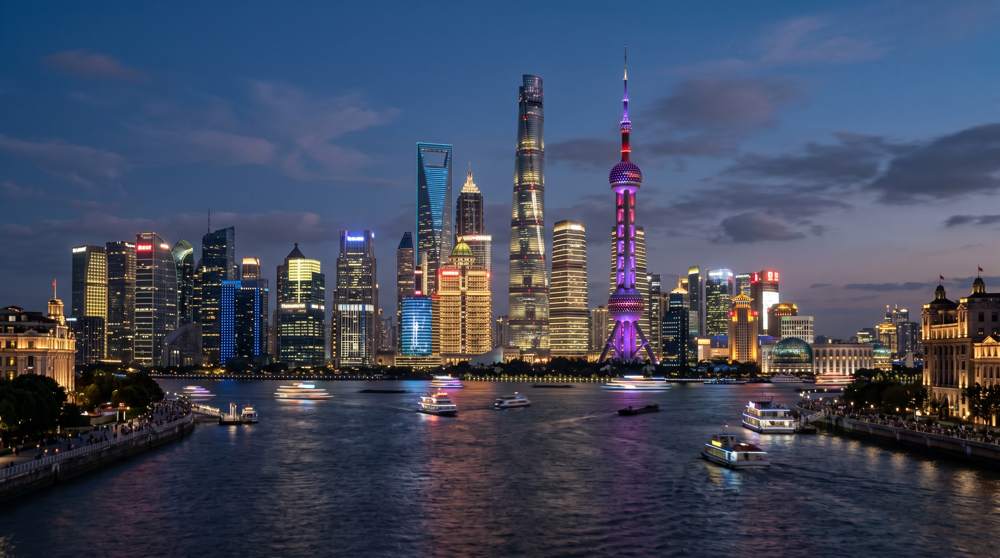
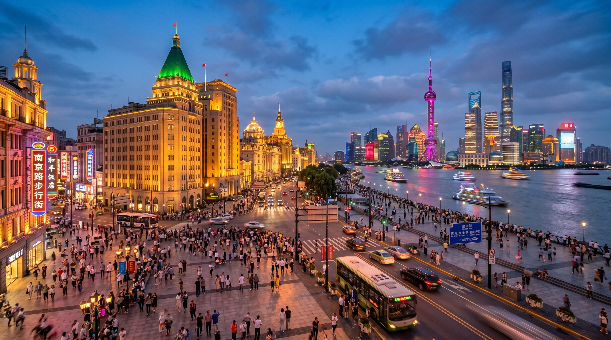
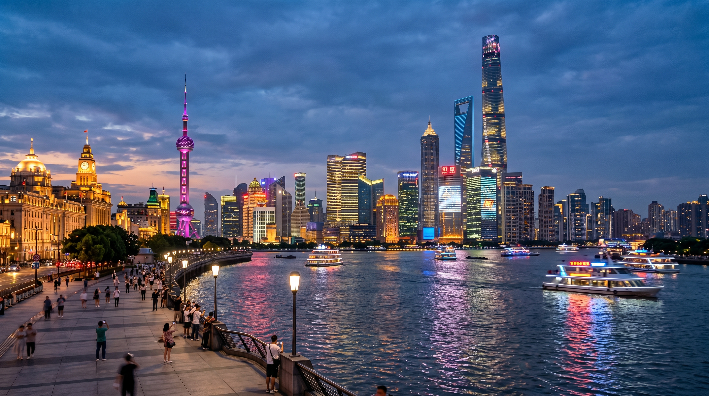

Hi! Three days in Shanghai is long enough to cover both classic attractions and local food. After my trip to Shanghai, I made this relaxing and fulfilling itinerary right away, with many tips from local friends. Save this guide if you plan to visit Shanghai in January, February, winter vacation, Spring Festival or weekends!
3-Day Shanghai Itinerary
Day 1: City God Temple → Yu Garden → The Bund → Waibaidu Bridge → East Nanjing Road

Morning: Visit City God Temple and Yu Garden. The Nine-Turn Bridge and old-brand shops show a strong classical style. Yu Garden is a delicate Jiangnan garden, perfect for slow walking.
Afternoon: Head to The Bund. Walk along the Huangpu River and enjoy the skyline of Lujiazui. If you have enough energy, walk all the way to Waibaidu Bridge.
Evening: Watch the beautiful night view of The Bund when lights are on. Then go to East Nanjing Road Pedestrian Street.
Day 2: Wukang Road → Xintiandi

Morning: Walk around Wukang Road. It was the former French Concession with plane trees and old western-style houses. Wukang Mansion is a must-visit landmark. Anfu Road and Wuyuan Road are nearby with many cafes and shops.
Afternoon: Visit Xintiandi, a fashionable area rebuilt from Shikumen buildings, showing Shanghai’s unique East-meets-West style.
Evening: Go to Lujiazui to see Oriental Pearl and Shanghai Tower closely.
Day 3: Shanghai Museum → South Sinan Road → Yuyuan Road → Suzhou Creek

Morning: Visit Shanghai Museum with rich collections to learn about Chinese history and culture quickly.
Afternoon: Choose South Sinan Road or Yuyuan Road. South Sinan Road has Former Residence of Sun Yat-sen and Sinan Mansion. Yuyuan Road has more local life and old alleys.
Evening: Walk along Suzhou Creek to enjoy the night view of old buildings like Postal Museum or relax in a bar.
Shanghai Food Guide

Shanghai Local Cuisine: Features rich oil and bright sauce. Try braised pork ribs, sizzling eel, and straw mushroom intestines. You don’t have to go to popular chain stores. Many time-honored brands near residential areas or small street restaurants offer authentic taste at fair prices, such as Guangming Cun and Lao Zhengxing.
Local Snacks: Besides xiaolongbao (soup dumplings), shengjian (pan-fried buns) – Da Hu Chun is clear water style while Yang’s is mixed water style. Also try scallion pancakes, spare ribs rice cakes, salty soybean milk, and fried glutinous rice cakes. Fresh meat moon cakes taste best when hot and juicy.
Shanghai Homestay Recommendation
Recommended Homestay: 【November】
Right downstairs from East Nanjing Road Pedestrian Street. Extra-large round bathtub, Dyson hairdryer, cinema-style projector. Smart AI home appliances: just say “Xiao Ai” to control curtains and lights. 24h hot water, Xiaomi washing machine, high-speed WiFi, tea bags, coffee, mineral water, first-aid kit, sewing kit, makeup remover supplies – just like home!
Exclusive code: 9402641
Location: Huangpu District, suits 2 people. Find it on the Muniao Homestay app by searching the 7-digit code.
Shanghai Travel Tips
Try the ferry at Dongchang Road Ferry for only 2 yuan across the Huangpu River – go before 18:00.
Viewing platforms at The Bund Source or the end of East Nanjing Road offer clean views of Lujiazui and The Bund buildings.
Avoid expensive souvenir shops near Yu Garden; buy reliable products from time-honored stores on Nanjing Road.
Keep important documents with you. Student ID and senior ID qualify for half-price tickets at many spots.
Great streets to explore: Xintiandi, Huaihai Middle Road, West Nanjing Road, Zhangyuan, Jing’an Temple, Yuyuan Road.